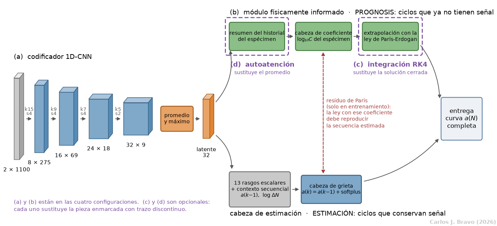
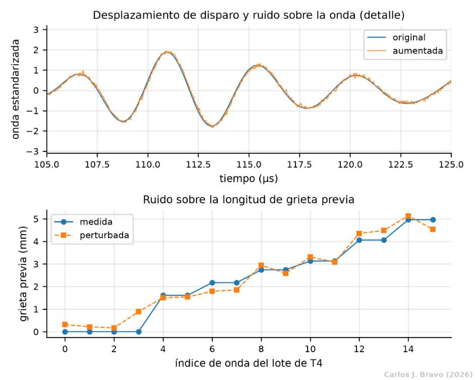
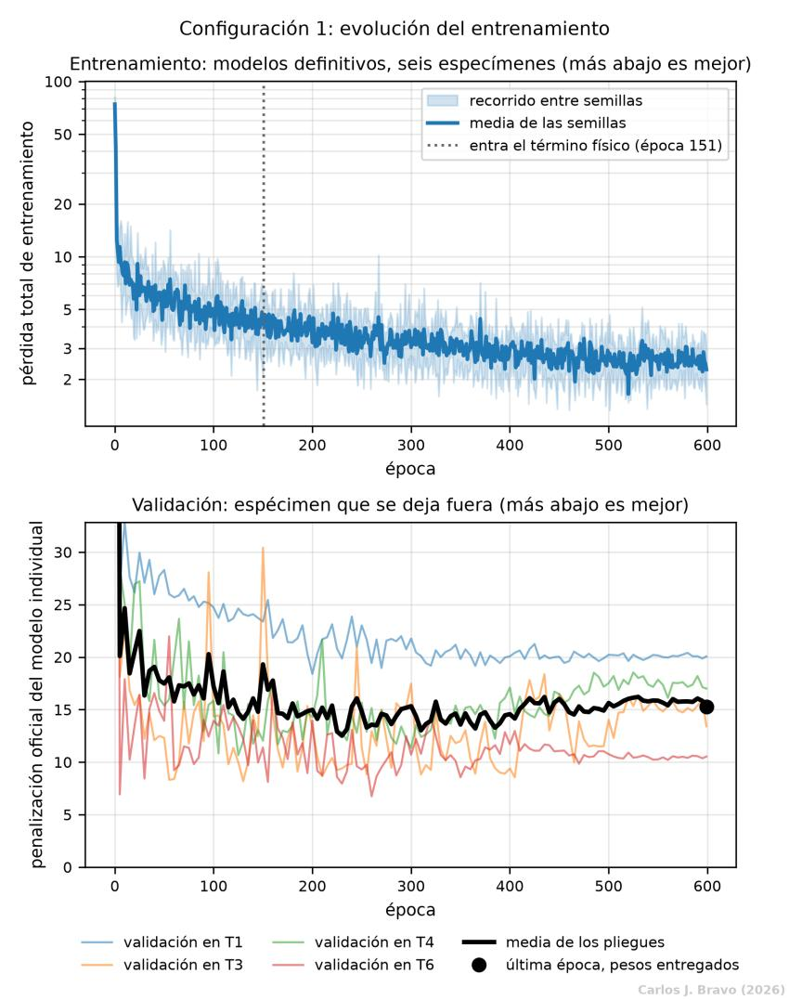
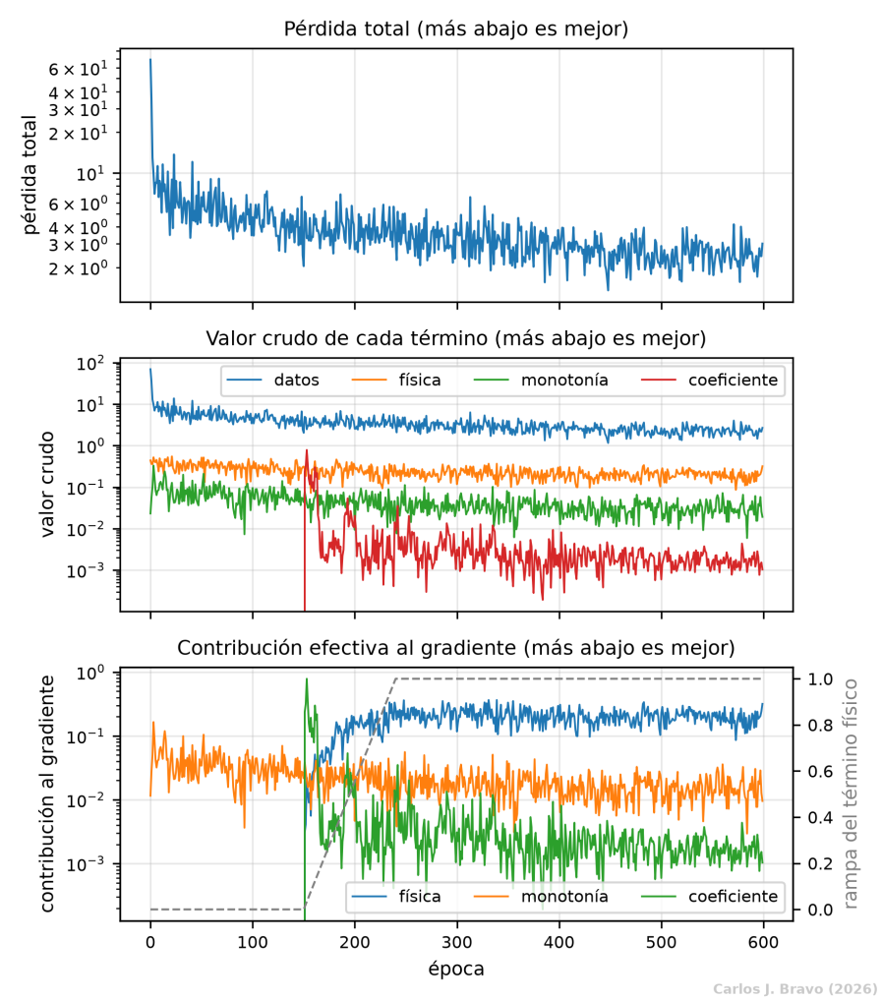
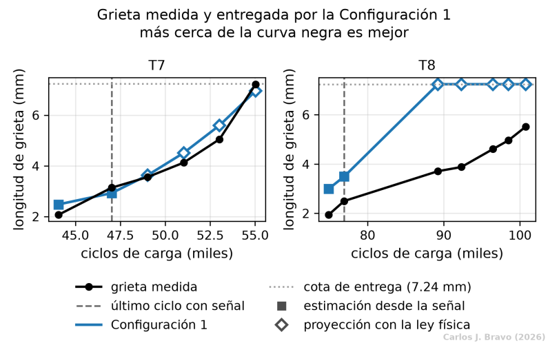

- 1. El problema
- 2. La señal
- 3. La ley física
- 4. El modelo
- 5. Conclusiones
- Bibliografía
El modelo: arquitectura y ablación
Con la señal limpia y la ley física calibrada, toca juntarlas. Esta parte presenta la arquitectura completa, explica cómo se diseñó el estudio de ablación para medir qué aporta cada pieza, y desmonta con detalle la configuración base, la que sirve de referencia para todas las demás.
La arquitectura y el estudio de ablación
En medicina, una ablación consiste en retirar un tejido para ver qué función cumplía. En aprendizaje automático la idea es la misma: se construye un modelo por piezas y se quitan o añaden de una en una, para saber cuánto aporta realmente cada una en lugar de presumirlo. Es la forma honesta de responder a la pregunta "¿esto sirve para algo?".
El modelo de este trabajo tiene cuatro piezas. Dos están siempre presentes y forman la base; las otras dos son opcionales.

Las cuatro configuraciones
Combinando las piezas salen cuatro configuraciones. Cada componente opcional se prueba dos veces, una sin el otro y otra con él, de modo que su efecto no dependa de una única combinación.
| Configuración | Componentes | Cómo extrapola | Cómo resume las ondas |
|---|---|---|---|
| 1 (base) | (a) + (b) | Fórmula cerrada de Paris-Erdogan | Promedio con peso igual |
| 2 | (a) + (b) + (c) | Integración RK4 sobre el bloque de carga real | Promedio con peso igual |
| 3 | (a) + (b) + (d) | Fórmula cerrada de Paris-Erdogan | Autoatención |
| 4 | (a) + (b) + (c) + (d) | Integración RK4 sobre el bloque de carga real | Autoatención |
El resto de esta parte se centra en la Configuración 1. Entenderla bien es imprescindible, porque las otras tres solo cambian una pieza de ella.
Configuración 1: una red convolucional que obedece a la física
La configuración base tiene dos salidas, una por cada tarea del certamen. La primera, la cabeza de estimación, entrega una longitud de grieta por cada onda. La segunda, la cabeza del coeficiente, entrega un único número por probeta, su coeficiente C, con el que la ley de Paris proyecta la grieta cuando ya no hay señal. Las dos leen la misma representación de la onda y, durante el entrenamiento, quedan atadas por una condición: el coeficiente de una debe ser capaz de reproducir la secuencia de grietas que estima la otra.
Los datos que recibe, y por qué son tan pocos
Cada onda llega de la Parte 2 convertida en dos canales de 1100 muestras: la onda estandarizada y su diferencia respecto del registro sano. En total, 2200 números por onda. Y hay muy pocas ondas: 87 con su longitud de grieta, de las que solo 65 corresponden a una grieta mayor que cero.
Ese tamaño manda sobre todo lo demás. Una red convolucional de las habituales, con millones de parámetros, memorizaría las 87 ondas en pocas épocas y no sabría nada de una probeta nueva. Por eso el codificador tiene solo 10160 parámetros, y el modelo completo, 10274.
Por qué cada ciclo aporta dos ondas
Cada vez que el ensayo se detiene para medir, la señal se registra dos veces seguidas, en los ficheros signal_1 y signal_2. Las dos repeticiones corresponden a la misma grieta, pero no son idénticas: difieren en el ruido eléctrico y en pequeñas variaciones de la adquisición. El modelo las usa como dos ejemplos distintos con la misma etiqueta, lo que duplica los ejemplos disponibles y, de paso, enseña a la red que esas pequeñas diferencias no significan nada.
Esa misma semejanza obliga a tener cuidado al validar. Si una repetición quedara en entrenamiento y la otra en validación, la red estaría examinándose con una copia casi exacta de algo que ya ha visto. Por eso la validación separa siempre probetas completas, nunca ciclos sueltos. La única excepción al uso de ambas es el registro sano de referencia, para el que se toma siempre la primera repetición.
El codificador: de 2200 números a 32
Una red convolucional unidimensional recorre la onda con pequeños patrones, llamados filtros, y en cada posición mide cuánto se parece el tramo de onda a cada patrón. El resultado es un mapa que dice dónde aparece cada patrón. Encadenando varias capas, la red pasa de detectar formas muy locales a reconocer estructuras más largas.
El codificador tiene cuatro bloques. Cada uno aplica una convolución, normaliza las activaciones del lote (batch normalization) y las pasa por una función de activación suave llamada GELU. En lugar de usar capas de agrupamiento para acortar la secuencia, cada convolución avanza varias muestras de golpe (paso o stride), lo que reduce la longitud y el coste de cálculo en la misma operación.
| Bloque | Filtros | Tamaño del filtro | Paso | Longitud de salida |
|---|---|---|---|---|
| Entrada | 2 canales | 1100 | ||
| 1 | 8 | 15 | 4 | 275 |
| 2 | 16 | 9 | 4 | 69 |
| 3 | 24 | 7 | 4 | 18 |
| 4 | 32 | 5 | 2 | 9 |
Al final del cuarto bloque, cada una de las 9 posiciones resume 399 muestras de la onda original, unos 20 µs, y posiciones consecutivas distan 6.4 µs. Es decir, la red acaba mirando la onda en tramos solapados de unos 20 µs, pero nadie los ha definido a mano: salen solos del tamaño de los filtros y de los pasos.
Los filtros del primer bloque: de dónde salen
El primer bloque tiene 8 filtros, y cada uno es una pequeña matriz de 2 × 15 números: 15 muestras de cada canal. Como abarca los dos canales a la vez, cada filtro combina desde el principio la onda estandarizada y la diferencial, en lugar de tratarlas por separado.
Al empezar el entrenamiento, son valores aleatorios, y el algoritmo de entrenamiento los va corrigiendo poco a poco, en la dirección que reduce el error, hasta que se convierten en los patrones que a la red le resultan útiles para estimar la grieta. En ese sentido, los filtros son lo que la red ha aprendido a buscar en la onda.
Conviene poner su tamaño en perspectiva. Quince muestras a 20 MHz son 0.75 µs, mientras que un periodo completo de la portadora de 200 kHz dura 5 µs, es decir, 100 muestras. Un filtro del primer bloque, por tanto, no ve ni siquiera una oscilación entera: responde a rasgos muy locales de la forma, como pendientes y curvaturas, y a cómo se combinan los dos canales. Los patrones de escala más larga, del tamaño del paquete S0, se construyen en los bloques siguientes.
El mapa de activación: de 2 × 1100 a 32 × 9
Cuando un filtro recorre la onda, en cada posición multiplica sus 2 × 15 pesos por el tramo de onda que tiene debajo y suma el resultado. Si el tramo se parece al patrón, sale un número alto; si no, uno bajo o negativo. Como avanza de cuatro en cuatro muestras, de las 1100 posiciones posibles solo visita 275, así que cada filtro deja una fila de 275 números. Esa fila es un mapa de activación: dice en qué zonas de la onda aparece el patrón que busca ese filtro.
Los dos canales de entrada no dan dos filas, porque cada filtro los combina en una sola suma. Lo que decide el número de filas es el número de filtros. Con los 8 filtros del primer bloque, la onda de 2 × 1100 se convierte en un mapa de 8 × 275: ocho filas, una por patrón, y 275 posiciones a lo largo de la onda.
A partir de aquí, cada bloque repite la misma operación sobre el mapa del bloque anterior, que trata como si fuera una señal con tantos canales como filas. Los filtros del segundo bloque son matrices de 8 × 9, porque abarcan las 8 filas del mapa anterior y 9 posiciones; hay 16 y avanzan de cuatro en cuatro, así que dejan un mapa de 16 × 69. El tercero, con 24 filtros de 16 × 7, deja 24 × 18. El cuarto, con 32 filtros de 24 × 5 y paso 2, deja 32 × 9.
2 × 1100 → 8 × 275 → 16 × 69 → 24 × 18 → 32 × 9
En cada bloque hay más filas y menos posiciones. Las filas son patrones cada vez más elaborados, porque combinan los del bloque anterior. Las posiciones son cada vez menos y más anchas: al final, cada una de las 9 abarca unos 20 µs de la onda original.
Del mapa a un resumen de 32 números
Tras el cuarto bloque quedan 32 mapas de 9 posiciones. Cada mapa se resume con dos estadísticos complementarios: su promedio y su máximo. El promedio refleja la atenuación global de la onda; el máximo, la amplitud del eco disperso más intenso. Como hay 32 mapas y de cada uno salen dos números, el resultado son 32 × 2 = 64 valores. Esos 64 números pasan por una capa lineal que los comprime en un vector de 32 componentes, la representación latente o huella de la onda. Durante el entrenamiento, una fracción de sus componentes se apaga al azar (dropout del 30%) para que la red no dependa de ninguna en exclusiva.
La cabeza de estimación: una grieta que solo puede crecer
Para estimar la grieta de un ciclo, la cabeza combina cuatro fuentes de información:
- la huella de 32 números de la onda;
- 13 rasgos calculados directamente sobre la señal;
- la grieta estimada en el ciclo anterior;
- el logaritmo de los ciclos transcurridos desde la medida anterior.
Los 13 rasgos son el valor eficaz del canal diferencial y su máximo absoluto, la correlación con la onda de referencia, el valor eficaz en ocho ventanas consecutivas de la traza, el centroide temporal de la energía diferencial y el retardo de fase en microsegundos. Entre todos recogen los tres fenómenos que explotan los métodos ganadores: pérdida de energía, cambio de fase y pérdida de parecido con la onda sana.
Lo más importante es cómo se construye la salida. La cabeza no predice la grieta directamente, sino cuánto ha crecido desde el ciclo anterior, y ese incremento pasa por una función llamada softplus, que siempre devuelve un número positivo:
donde zk es la huella de la onda, vk los 13 rasgos, ΔNk los ciclos transcurridos y f una capa lineal.
El resultado es que la secuencia estimada nunca puede decrecer. La monotonía que exige el certamen no se impone después con un parche: está garantizada por construcción. Se probaron otras dos formas, y las dos fallaban. Predecir la grieta absoluta hacía que la red ignorase el contexto y se estancase en un valor constante. Predecir una velocidad y multiplicarla por los ciclos transcurridos amplificaba cualquier error por un factor que en este conjunto va de 0.5 a 36.
La cabeza del coeficiente: un número por probeta
El coeficiente C es una propiedad de la probeta, no de cada onda. Por eso esta cabeza lee el promedio de las huellas de todas las ondas de la probeta y produce un único valor:
Aquí Cprior es el coeficiente poblacional de la Parte 3, log10 C = -8.4264, y u es la salida de una capa lineal. La tangente hiperbólica está acotada entre -1 y 1, así que la red puede mover el coeficiente como mucho una década hacia arriba o hacia abajo, nunca más. Es una forma de dejarle libertad para adaptarse a cada probeta sin permitirle valores físicamente absurdos.
Con C y el exponente fijo m = 2.00, la ley de Paris tiene una solución exacta muy sencilla: desde la última grieta estimada, la grieta crece de forma exponencial con los ciclos, con una tasa k que depende de C y del rango de tensión equivalente del bloque de carga:
La función de pérdida: cuatro exigencias a la vez
Durante el entrenamiento la red minimiza una suma de cuatro términos. Cada uno expresa una exigencia distinta:
Tres de ellos se escriben así. El término de datos copia la forma asimétrica de la penalización oficial, con el exponente acotado en 6 para que no desborde al principio del entrenamiento; wi es el peso de cada medida:
El término físico promedia, con la función de Huber (cuadrática hasta 0.5 mm y lineal por encima), el residuo entre la estimación del ciclo siguiente y lo que predice la ley Π partiendo del anterior:
Y el prior es la penalización cuadrática de alejarse del coeficiente poblacional:
Dos detalles marcan la diferencia. El primero: en el término físico, la estimación del ciclo anterior se trata como un valor fijo. Así el término solo puede corregir la estimación posterior y el coeficiente, y no puede hacer trampa acercando ambas estimaciones entre sí. El segundo: el término físico no actúa desde el principio. Al comienzo las estimaciones aún son malas, y forzarlas a obedecer la ley haría que todas acabasen ajustadas a una misma curva. Por eso permanece apagado durante el primer 25% de las épocas y entra de forma gradual a lo largo del 15% siguiente.
Hay un último ajuste, quizá el que más influye en el resultado final: las dos primeras medidas de grieta no nula de cada probeta pesan 48 veces más que el resto. Son los puntos desde los que el protocolo obliga a extrapolar, de modo que acertar en ellos importa más que acertar en cualquier otro.
Cómo se entrena y cómo predice
| Elemento | Valor |
|---|---|
| Optimizador | AdamW, tasa de aprendizaje 3 × 10-3 con recocido coseno, decaimiento de peso 10-3 |
| Épocas | 600, sin parada temprana |
| Lote | Una probeta completa por paso, en orden aleatorio cada época |
| Aumento de datos | Desplazamiento de ±0.5 µs, ruido del 5% y ruido de 0.4 mm sobre la grieta previa |
| Conjunto | Cinco modelos con semillas distintas; se promedian sus predicciones |
| Cota de entrega | 7.24 mm, la segunda mayor grieta observada en entrenamiento |
El lote es una probeta entera, y no un puñado de ondas barajadas, porque dos piezas del modelo están definidas a nivel de probeta: el residuo físico, que compara ciclos consecutivos de la misma probeta, y la cabeza del coeficiente, que promedia todas sus ondas.
Aumento de datos: más variedad sin inventar señales
Con 87 ondas repartidas entre seis probetas de entrenamiento, una red con miles de parámetros puede aprenderse cada onda de memoria en lugar de aprender a leer la grieta. Para evitarlo, en cada época cada onda se altera ligeramente al azar antes de entrar en la red, de modo que nunca ve exactamente la misma señal dos veces. Las alteraciones se aplican solo durante el entrenamiento; al predecir, la red recibe la onda tal cual.
La condición es que cada alteración reproduzca algo que la adquisición produce de verdad. Inventar variaciones que el ensayo no puede generar enseñaría a la red a tolerar cosas que nunca va a ver, y podría borrar justo la información que delata la grieta.
| Perturbación | Cómo se aplica | Qué reproduce |
|---|---|---|
| Desplazamiento temporal | La onda se adelanta o se retrasa un número aleatorio de muestras entre -10 y +10, es decir, hasta ±0.5 µs. | La incertidumbre del instante de disparo de la adquisición. |
| Ruido gaussiano | Se suma ruido aleatorio con una desviación del 5% de la de la onda estandarizada. | El ruido eléctrico de la cadena de adquisición. |
| Ruido en la grieta previa | A la grieta del ciclo anterior se le suma ruido con desviación de 0.4 mm, recortado para que nunca sea negativa. | La diferencia entre entrenar con la medida exacta y predecir con la propia estimación. |
La tercera no es un aumento de datos al uso. En entrenamiento la red recibe como contexto la grieta medida en el ciclo anterior, que es exacta; al predecir recibe su propia estimación, que arrastra error. Si solo hubiera visto valores exactos, ese error la pillaría por sorpresa. Perturbar la entrada durante el entrenamiento acerca las dos situaciones.
Igual de importante es lo que no se hace. No se estira ni se comprime la onda en el tiempo, ni se desplaza más de medio microsegundo, porque el tiempo de vuelo forma parte de la huella del daño: la grieta retrasa la llegada del paquete, y alterarlo más allá de la incertidumbre del disparo borraría precisamente lo que la red tiene que aprender.

Para comprobar que el entrenamiento generaliza, el mismo modelo se entrenó cuatro veces dejando fuera cada vez una probeta distinta (T1, T3, T4 o T6) y midiendo la penalización oficial sobre ella cada cinco épocas. T7 y T8 no participan en esta validación.

La pérdida desciende durante las 600 épocas, con un escalón cuando entra la física en la época 151. La validación toca su mínimo en la época 230 (12.51) y termina en 15.26, pero las probetas no se comportan igual: T6 se estabiliza mientras T4 empeora a partir de la 400. Con solo cuatro probetas de validación, esa disparidad es del mismo tamaño que la diferencia entre el mínimo y el final, así que la curva no permite fijar un punto de parada fiable.

A la hora de predecir, la estimación es recursiva: la grieta previa que recibe la red es su propia estimación del ciclo anterior, porque en T7 y T8 no hay ninguna medida disponible. Cuando se acaba la señal, la ley de Paris toma el relevo desde la última estimación, con el coeficiente que ha calculado la red, y la grieta entregada nunca supera la cota de 7.24 mm.
Qué consigue
| Probeta | Penalización | RMSE (mm) | De la estimación | De la prognosis |
|---|---|---|---|---|
| T7 | 6.49 | 0.350 | 1.59 | 4.89 |
| T8 | 90.45 | 2.418 | 5.38 | 85.07 |

En T7, la probeta de carga constante, la proyección sigue la forma de la curva medida con un error medio de 0.35 mm, y su penalización de 6.49 mejora la del tercer puesto publicado (9.23) y la de las tres réplicas (22.71, 83.25 y 215.12). En T8, la de carga variable, la historia es otra: la proyección alcanza la cota de 7.24 mm desde el primer ciclo sin señal y la penalización sube a 90.45.
El reparto de la penalización cuenta dónde está el problema: la prognosis aporta el 75.4% de la penalización en T7 y el 94.0% en T8. Dicho de otro modo, la red estima bien mientras hay señal; lo que decide el resultado es la extrapolación, y en particular el coeficiente con el que se hace. Ese es el hilo que siguen las configuraciones 2, 3 y 4, cuyos componentes actúan precisamente sobre la extrapolación.
Cuaderno: Configuración 1El entrenamiento, la validación y la entrega de la red convolucional con la ley física. Abrir el cuaderno ↗